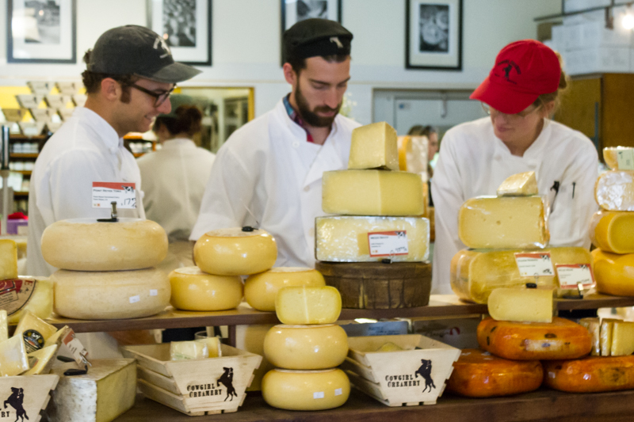

 Cowgirl Creamery Artisan Cheese is a full-service, European style cheese shop offering Cowgirl Creamery’s own cheeses and artisan farmstead cheese from some of the most distinguished cheesemakers in America and Europe. These include Jean d’Alos in France, Neal’s Yard’s English Farmhouse cheese, and artisanal producers such as Jasper Hill in Vermont and Sally Jackson in Washington State. Proprietors Sue Conley and Peggy Smith feature cheeses made at their two creameries in Point Reyes Station and Petaluma—made with certified organic milk from Straus Family Creamery and Chileno Valley Jersey Dairy. The cheeses made by hand with this exceptional milk include clabbered cottage cheese, fromage blanc and crème fraiche as well as award winning aged soft cheeses and the latest addition, Wagon Wheel, a medium hard table cheese. Staff are all highly trained and the shop carries tools such as knives, books and cheese boards, and has a selection of cheese accompaniments including local jams and honeys, local crackers, and cured meats.
In 1997, Peggy Smith, a seventeen-year Chez Panisse veteran, joined Sue Conley, a former owner of Bette’s Oceanview Diner in Berkeley, to create Tomales Bay Foods in downtown Point Reyes Station in western Marin County. The Point Reyes location features a viewable creamery, as does the newer creamery on First Street in Petaluma. Cowgirl Creamery sold cheese at a number of Bay Area farmer’s markets for more than seven years before opening a permanent shop in the Marketplace.
In July 2010, Cowgirl Creamery is taking over adjacent space at the Ferry Building Marketplace to create Sidekick. Here, a cheese and dairy-centric menu features breakfast, lunch and snack items such as crepes, raclette and seasonal salads.
Monday thru Friday: 10–7
Saturday: 8–6
Sunday: 11–6
(415) 362-9354
Marketplace Shop #17
View Location